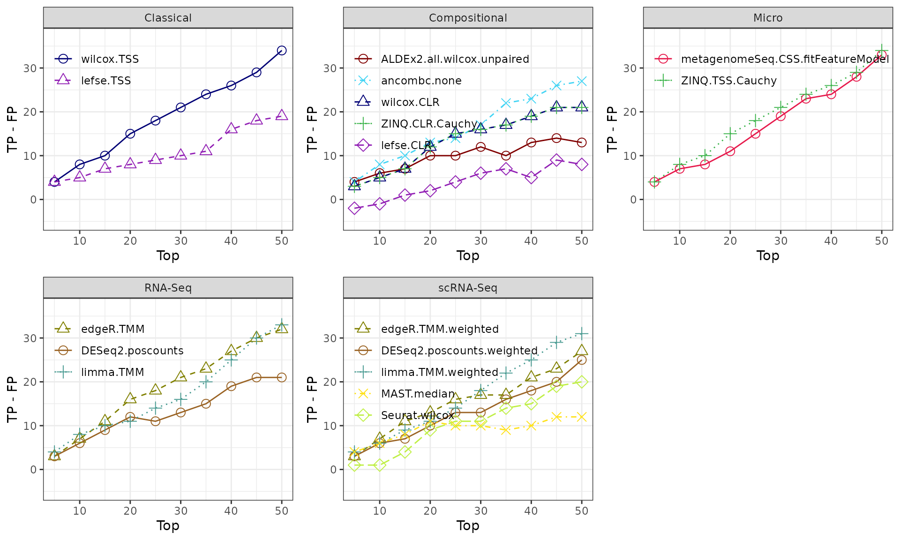

HMP_2012_16S_gingival_V35_subset - subgingival vs supragingival
Source:vignettes/articles/HMP_2012_16S_gingival_V35_subset.Rmd
HMP_2012_16S_gingival_V35_subset.Rmd
library(MicrobiomeBenchmarkDataAnalyses)
library(MicrobiomeBenchmarkData)
library(mia)
library(benchdamic)
library(dplyr)
library(ggplot2)
library(gridExtra)Import data
dat_name <-'HMP_2012_16S_gingival_V35_subset'
conditions_col <- 'body_subsite'
conditions <- c(condB = 'subgingival_plaque', condA = 'supragingival_plaque')
tse <- getBenchmarkData(dat_name, dryrun = FALSE)[[1]]
tse <- filterTaxa(tse)
colData(tse)[[conditions_col]] <-
factor(colData(tse)[[conditions_col]], levels = conditions)
tse## class: TreeSummarizedExperiment
## dim: 783 76
## metadata(0):
## assays(1): counts
## rownames(783): OTU_97.31247 OTU_97.44487 ... OTU_97.45365 OTU_97.45307
## rowData names(7): kingdom phylum ... genus taxon_annotation
## colnames(76): 700023057 700023179 ... 700114009 700114338
## colData names(13): dataset subject_id ... sequencing_method
## variable_region_16s
## reducedDimNames(0):
## mainExpName: NULL
## altExpNames(0):
## rowLinks: a LinkDataFrame (783 rows)
## rowTree: 1 phylo tree(s) (892 leaves)
## colLinks: NULL
## colTree: NULLPrior knowledge
row_data <- as.data.frame(rowData(tse))
prior_info <- row_data[, c('genus', 'taxon_annotation')]
prior_info$taxon_name <- rownames(prior_info)
prior_info$new_names <- paste0(prior_info$taxon_name, '|', prior_info$genus)
head(prior_info)## genus taxon_annotation taxon_name
## OTU_97.31247 Streptococcus facultative_anaerobic OTU_97.31247
## OTU_97.44487 Streptococcus facultative_anaerobic OTU_97.44487
## OTU_97.34979 Streptococcus facultative_anaerobic OTU_97.34979
## OTU_97.34572 Streptococcus facultative_anaerobic OTU_97.34572
## OTU_97.42259 Streptococcus facultative_anaerobic OTU_97.42259
## OTU_97.34698 Streptococcus facultative_anaerobic OTU_97.34698
## new_names
## OTU_97.31247 OTU_97.31247|Streptococcus
## OTU_97.44487 OTU_97.44487|Streptococcus
## OTU_97.34979 OTU_97.34979|Streptococcus
## OTU_97.34572 OTU_97.34572|Streptococcus
## OTU_97.42259 OTU_97.42259|Streptococcus
## OTU_97.34698 OTU_97.34698|StreptococcusConvert to phyloseq
ps <- makePhyloseqFromTreeSummarizedExperiment(tse)
phyloseq::sample_data(ps)$body_subsite <-
factor(phyloseq::sample_data(ps)$body_subsite)
ps## phyloseq-class experiment-level object
## otu_table() OTU Table: [ 783 taxa and 76 samples ]
## sample_data() Sample Data: [ 76 samples by 13 sample variables ]
## tax_table() Taxonomy Table: [ 783 taxa by 6 taxonomic ranks ]
## phy_tree() Phylogenetic Tree: [ 783 tips and 778 internal nodes ]Run DA
time_start <- Sys.time()
DA_output <- run_DA(ps, conditions_col, conditions)
time_end <- Sys.time()
time_elapsed <- time_end - time_start
time_elapsed## Time difference of 3.165193 minsEnrichment
Get direction
direction <- get_direction_cols(DA_output, conditions_col, conditions)Enrichment (adjP <= 0.1)
enrichment <- createEnrichment(
object = DA_output,
priorKnowledge = prior_info,
enrichmentCol = "taxon_annotation",
namesCol = "new_names",
slot = "pValMat", colName = "adjP", type = "pvalue",
direction = direction,
threshold_pvalue = 0.1,
threshold_logfc = 0,
top = NULL, # No top feature selected
alternative = "greater",
verbose = FALSE
)Plot enrichment
enrich_plot <- plot_enrichment(
enrichment = enrichment,
enrichment_col = "taxon_annotation",
levels_to_plot = c("aerobic", "anaerobic", "facultative_anaerobic"),
conditions = c(condB = 'subgingival', condA = 'supragingival')
)
enrich_plot2 <- plot_enrichment_2(
enrich_plot,
dir = c(up = 'Suptragingival Plaque', down = 'Subgingival Plaque')
)
enrich_plot2
Putative true positives - putative false positives
Calculate TP - FP ratio (no threshold)
positives <- createPositives(
object = DA_output,
priorKnowledge = prior_info,
enrichmentCol = "taxon_annotation", namesCol = "new_names",
slot = "pValMat", colName = "adjP", type = "pvalue",
direction = direction,
threshold_pvalue = 1,
threshold_logfc = 0,
top = seq.int(from = 0, to = 50, by = 5),
alternative = "greater",
verbose = FALSE,
TP = list(c("DOWN Abundant", "anaerobic"), c("UP Abundant", "aerobic")),
FP = list(c("DOWN Abundant", "aerobic"), c("UP Abundant", "anaerobic"))
) |>
left_join(get_meth_class(), by = 'method')Plot TP - FP
positive_plots <- plot_positives(positives)
grid.arrange(grobs = positive_plots, ncol = 3)
Session info
## R version 4.2.1 (2022-06-23)
## Platform: x86_64-pc-linux-gnu (64-bit)
## Running under: Ubuntu 20.04.5 LTS
##
## Matrix products: default
## BLAS: /usr/lib/x86_64-linux-gnu/blas/libblas.so.3.9.0
## LAPACK: /usr/lib/x86_64-linux-gnu/lapack/liblapack.so.3.9.0
##
## locale:
## [1] LC_CTYPE=en_US.UTF-8 LC_NUMERIC=C
## [3] LC_TIME=en_US.UTF-8 LC_COLLATE=en_US.UTF-8
## [5] LC_MONETARY=en_US.UTF-8 LC_MESSAGES=en_US.UTF-8
## [7] LC_PAPER=en_US.UTF-8 LC_NAME=C
## [9] LC_ADDRESS=C LC_TELEPHONE=C
## [11] LC_MEASUREMENT=en_US.UTF-8 LC_IDENTIFICATION=C
##
## attached base packages:
## [1] stats4 stats graphics grDevices utils datasets methods
## [8] base
##
## other attached packages:
## [1] gridExtra_2.3
## [2] ggplot2_3.3.6
## [3] dplyr_1.0.10
## [4] benchdamic_1.2.5
## [5] mia_1.4.0
## [6] MultiAssayExperiment_1.22.0
## [7] MicrobiomeBenchmarkData_0.99.0
## [8] TreeSummarizedExperiment_2.4.0
## [9] Biostrings_2.64.1
## [10] XVector_0.36.0
## [11] SingleCellExperiment_1.18.0
## [12] SummarizedExperiment_1.26.1
## [13] Biobase_2.56.0
## [14] GenomicRanges_1.48.0
## [15] GenomeInfoDb_1.32.4
## [16] IRanges_2.30.1
## [17] S4Vectors_0.34.0
## [18] BiocGenerics_0.42.0
## [19] MatrixGenerics_1.8.1
## [20] matrixStats_0.62.0
## [21] MicrobiomeBenchmarkDataAnalyses_0.0.0.9000
##
## loaded via a namespace (and not attached):
## [1] rsvd_1.0.5 zinbwave_1.18.0
## [3] Hmisc_4.7-1 ica_1.0-3
## [5] ZINQ_1.0 class_7.3-20
## [7] glmnet_4.1-4 foreach_1.5.2
## [9] lmtest_0.9-40 rprojroot_2.0.3
## [11] crayon_1.5.1 rbibutils_2.2.9
## [13] spatstat.core_2.4-4 MASS_7.3-58.1
## [15] rhdf5filters_1.8.0 MAST_1.22.0
## [17] nlme_3.1-159 backports_1.4.1
## [19] ALDEx2_1.28.1 rlang_1.0.6
## [21] ROCR_1.0-11 readxl_1.4.1
## [23] SparseM_1.81 microbiome_1.18.0
## [25] irlba_2.3.5 nloptr_2.0.3
## [27] limma_3.52.3 scater_1.24.0
## [29] filelock_1.0.2 BiocParallel_1.30.3
## [31] bit64_4.0.5 glue_1.6.2
## [33] rngtools_1.5.2 sctransform_0.3.5
## [35] parallel_4.2.1 vipor_0.4.5
## [37] spatstat.sparse_2.1-1 AnnotationDbi_1.58.0
## [39] spatstat.geom_2.4-0 tidyselect_1.1.2
## [41] SeuratObject_4.1.2 NADA_1.6-1.1
## [43] fitdistrplus_1.1-8 phyloseq_1.40.0
## [45] XML_3.99-0.10 tidyr_1.2.1
## [47] zoo_1.8-11 MatrixModels_0.5-1
## [49] xtable_1.8-4 magrittr_2.0.3
## [51] evaluate_0.16 Rdpack_2.4
## [53] scuttle_1.6.3 cli_3.4.1
## [55] zlibbioc_1.42.0 rstudioapi_0.14
## [57] doRNG_1.8.2 miniUI_0.1.1.1
## [59] sp_1.5-0 metagenomeSeq_1.38.0
## [61] bslib_0.4.0 rpart_4.1.16
## [63] zCompositions_1.4.0-1 tidytext_0.3.4
## [65] treeio_1.20.2 shiny_1.7.2
## [67] BiocSingular_1.12.0 xfun_0.33
## [69] multtest_2.52.0 cluster_2.1.4
## [71] caTools_1.18.2 biomformat_1.24.0
## [73] KEGGREST_1.36.3 quantreg_5.94
## [75] tibble_3.1.8 expm_0.999-6
## [77] ggrepel_0.9.1 ape_5.6-2
## [79] listenv_0.8.0 png_0.1-7
## [81] permute_0.9-7 future_1.28.0
## [83] withr_2.5.0 bitops_1.0-7
## [85] plyr_1.8.7 cellranger_1.1.0
## [87] RcppZiggurat_0.1.6 survey_4.1-1
## [89] e1071_1.7-11 pillar_1.8.1
## [91] gplots_3.1.3 cachem_1.0.6
## [93] multcomp_1.4-20 fs_1.5.2
## [95] DelayedMatrixStats_1.18.0 vctrs_0.4.1
## [97] ellipsis_0.3.2 generics_0.1.3
## [99] tools_4.2.1 foreign_0.8-82
## [101] NOISeq_2.40.0 beeswarm_0.4.0
## [103] munsell_0.5.0 proxy_0.4-27
## [105] DelayedArray_0.22.0 fastmap_1.1.0
## [107] compiler_4.2.1 abind_1.4-5
## [109] httpuv_1.6.6 DescTools_0.99.46
## [111] plotly_4.10.0 rgeos_0.5-9
## [113] decontam_1.16.0 GenomeInfoDbData_1.2.8
## [115] edgeR_3.38.4 lattice_0.20-45
## [117] deldir_1.0-6 utf8_1.2.2
## [119] later_1.3.0 BiocFileCache_2.4.0
## [121] jsonlite_1.8.0 tokenizers_0.2.3
## [123] scales_1.2.1 gld_2.6.5
## [125] ScaledMatrix_1.4.1 tidytree_0.4.1
## [127] pbapply_1.5-0 sparseMatrixStats_1.8.0
## [129] genefilter_1.78.0 lazyeval_0.2.2
## [131] promises_1.2.0.1 doParallel_1.0.17
## [133] latticeExtra_0.6-30 goftest_1.2-3
## [135] spatstat.utils_2.3-1 reticulate_1.26
## [137] checkmate_2.1.0 rmarkdown_2.16
## [139] pkgdown_2.0.6 sandwich_3.0-2
## [141] cowplot_1.1.1 textshaping_0.3.6
## [143] statmod_1.4.37 forcats_0.5.2
## [145] Rtsne_0.16 softImpute_1.4-1
## [147] uwot_0.1.14 igraph_1.3.5
## [149] survival_3.4-0 yaml_2.3.5
## [151] systemfonts_1.0.4 ANCOMBC_1.6.2
## [153] htmltools_0.5.3 memoise_2.0.1
## [155] modeltools_0.2-23 Seurat_4.2.0
## [157] locfit_1.5-9.6 viridisLite_0.4.1
## [159] digest_0.6.29 assertthat_0.2.1
## [161] mime_0.12 rappdirs_0.3.3
## [163] RSQLite_2.2.17 Rfast_2.0.6
## [165] yulab.utils_0.0.5 future.apply_1.9.1
## [167] Exact_3.2 data.table_1.14.2
## [169] blob_1.2.3 vegan_2.6-2
## [171] ragg_1.2.2 labeling_0.4.2
## [173] splines_4.2.1 Formula_1.2-4
## [175] DECIPHER_2.24.0 Rhdf5lib_1.18.2
## [177] RCurl_1.98-1.8 hms_1.1.2
## [179] rhdf5_2.40.0 colorspace_2.0-3
## [181] base64enc_0.1-3 shape_1.4.6
## [183] ggbeeswarm_0.6.0 libcoin_1.0-9
## [185] nnet_7.3-17 sass_0.4.2
## [187] Rcpp_1.0.9 coin_1.4-2
## [189] RANN_2.6.1 mvtnorm_1.1-3
## [191] fansi_1.0.3 SnowballC_0.7.0
## [193] truncnorm_1.0-8 parallelly_1.32.1
## [195] R6_2.5.1 grid_4.2.1
## [197] ggridges_0.5.4 lifecycle_1.0.2
## [199] rootSolve_1.8.2.3 curl_4.3.2
## [201] leiden_0.4.3 jquerylib_0.1.4
## [203] dearseq_1.8.4 Matrix_1.5-1
## [205] desc_1.4.2 RcppAnnoy_0.0.19
## [207] TH.data_1.1-1 RColorBrewer_1.1-3
## [209] iterators_1.0.14 stringr_1.4.1
## [211] htmlwidgets_1.5.4 Wrench_1.14.0
## [213] polyclip_1.10-0 beachmat_2.12.0
## [215] purrr_0.3.4 janeaustenr_1.0.0
## [217] mgcv_1.8-40 globals_0.16.1
## [219] spatstat.random_2.2-0 lmom_2.9
## [221] htmlTable_2.4.1 patchwork_1.1.2
## [223] progressr_0.11.0 codetools_0.2-18
## [225] prettyunits_1.1.1 gtools_3.9.3
## [227] dbplyr_2.2.1 gtable_0.3.1
## [229] DBI_1.1.3 highr_0.9
## [231] tensor_1.5 httr_1.4.4
## [233] KernSmooth_2.23-20 progress_1.2.2
## [235] stringi_1.7.8 farver_2.1.1
## [237] reshape2_1.4.4 annotate_1.74.0
## [239] viridis_0.6.2 ggdendro_0.1.23
## [241] boot_1.3-28 BiocNeighbors_1.14.0
## [243] interp_1.1-3 ade4_1.7-19
## [245] geneplotter_1.74.0 CompQuadForm_1.4.3
## [247] energy_1.7-10 scattermore_0.8
## [249] DESeq2_1.36.0 bit_4.0.4
## [251] jpeg_0.1-9 spatstat.data_2.2-0
## [253] pkgconfig_2.0.3 gsl_2.1-7.1
## [255] DirichletMultinomial_1.38.0 MGLM_0.2.1
## [257] mitools_2.4 knitr_1.40